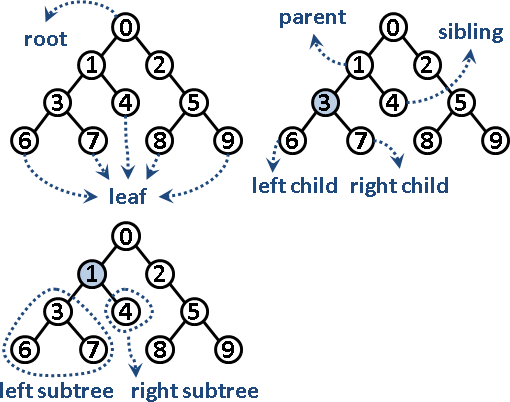
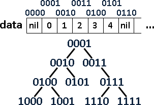
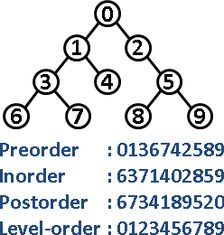
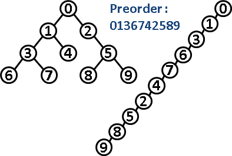
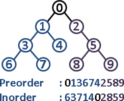
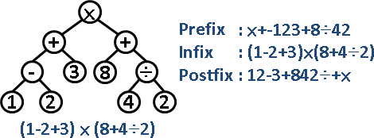

Binary Tree
Binary Tree
「二元樹」是計算機科學最重要的概念，甚至可以說：二元樹開創了計算機科學。
像是資料結構Binary Search Tree與Heap，交換式排序演算法的Decision Tree、資料壓縮的Huffman Tree、3D繪圖的BSP Tree、編譯器的Parse Tree……，這一大堆稀奇古怪的術語，通通都是二元樹。總之，二元樹的應用相當廣泛，是資工系學生必學的基礎概念。
「二元樹」與「樹」，儘管名稱相近，但是概念不相近，至於用途更是天差地遠，兩者可以分別獨立學習。二元樹：資料結構課程的二元搜尋樹章節，會順便引出二元樹的概念；樹：演算法課程的圖論章節，一開始就會介紹樹的定義。
言歸正傳。「二元樹」就是分兩岔的樹，每個節點可以有左小孩和右小孩，每個節點可以有零個、一個、兩個小孩。
順便介紹幾個特殊的二元樹：
full binary tree：除了樹葉以外，每個節點都有兩個小孩。
complete binary tree：各層節點全滿，除了最後一層，最後一層節點全部靠左。
perfect binary tree：各層節點全滿。同時也是full binary tree和complete binary tree。

Binary Tree資料結構
第一種方法，是建立節點，運用指標串接各個節點。
第二種方法，是讓二進位數字一一對應到二元樹的節點。
建立一個陣列，運用陣列索引值就能得到各個節點：樹根的索引值固定是一，索引值乘上兩倍就得到左小孩，索引值乘上兩倍再加一就得到右小孩，索引值除以二就得到父親。
優點是程式碼簡潔，效率高。
缺點是浪費記憶體空間。如果不是complete binary tree，那麼陣列就有很多閒置空格。
另一個缺點是樹的高度受限制。1024 = 2^10格的陣列，樹的高度只有10，不能更高了。
UVa 112 122
Binary Tree Traversal
二元樹的遍歷順序，理論上總共四種──但是事實上還是只有DFS與BFS兩種，只不過更動了節點的輸出順序。
注意樹根的位置，就能輕鬆解讀這四種序。
Preorder Traversal 前序遍歷 理論上的遍歷順序是：根、左子樹、右子樹。根排在前面。 即是Depth-first Search。 Inorder Traversal 中序遍歷 理論上的遍歷順序是：左子樹、根、右子樹。根排在中間。 實際上是採用Depth-first Search，只不過更動了節點的輸出順序。 Postorder Traversal 後序遍歷 理論上的遍歷順序是：左子樹、右子樹、根。根排在後面。 實際上是採用Depth-first Search，只不過更動了節點的輸出順序。 Level-order Traversal 層序遍歷 即是Breath-first Search。
UVa 112 699
Binary Tree Reconstruction
以一棵二元樹能得到前序、中序、後序、層序，那麼以前序、中序、後序、層序能得到一棵二元樹嗎？
只有一種序，是無法還原出一棵二元樹的，有很多可能性。
有兩種序，就有機會還原出唯一一棵二元樹。比方說，只知道preorder和inorder，求出原本的二元樹。
運用Divide and Conquer可以巧妙解決。在preorder之中，最左邊的元素就是root；在inorder之中，root的兩邊分別為左子樹和右子樹──利用root便可區分左子樹和右子樹。子樹也是樹，可以用相同手法繼續分割，最後便可求出整棵樹的架構。
但是只有preorder和postorder的話，是做不出答案的。因為無法確定樹根的位置。
那麼level-order呢？大家就自己想想吧。
UVa 10701 536 548 10410 12347
Polish Notation / Reverse Polish Notation
凡是談到二元樹的前序、中序、後序，總是順便談到四則運算的前序、中序、後序表示法。
我們可以將一道四則運算式子，換成二元樹。
然後列出此二元樹的前序、中序、後序。其中前序就是波蘭表示法，又稱作prefix；中序就是原來的四則運算式子、需要括號，又稱作infix；後序就是逆波蘭表示法，又稱作postfix。
然而，建立二元樹是很麻煩的。能不能略過二元樹，直接把四則運算式子換成波蘭表示法（逆波蘭表示法）呢？當然能！只要運用stack，就可以做到這件事情。
一道四則運算式子，改成波蘭表示法（逆波蘭表示法）之後，計算過程變成由左往右計算，不必顧慮先乘除後加減、不必顧慮括號，只需要一個額外的stack作為輔助。
程式語言的四則運算式子，事實上都會被編譯器轉換成波蘭表示法（逆波蘭表示法），以利電腦計算。
UVa 372 727 11234 172 10700 10847